Manual do Usuário — CIFA
Apresentação
A CIFA oferece integração bancária por API com os módulos financeiros do ERP Protheus.
Importante: a localização dos menus da CIFA pode variar de empresa para empresa. Caso não encontre algum menu apresentado neste manual, consulte o suporte de TI/Protheus da sua empresa.
Segurança
A apresentação destaca os seguintes recursos de segurança:
- Criptografia de ponta a ponta;
- Certificado digital;
- Dupla autenticação;
- Firewall de borda.
Recebimento via Boleto
A CIFA permite disponibilizar boletos para clientes em diferentes plataformas e realizar a baixa do título no Protheus após o pagamento.
O boleto pode ser:
- Híbrido; ou
- Normal.
O tipo depende do banco e do contrato estabelecido entre a empresa e a instituição bancária.
Geração do boleto
A geração do boleto pode ocorrer:
- Manualmente; ou
- Automaticamente no momento do faturamento.
Essa configuração é opcional e varia conforme cada empresa.
Gestor de Boletos
O Gestor de Boletos disponibiliza diversas funções para gerenciamento dos títulos.
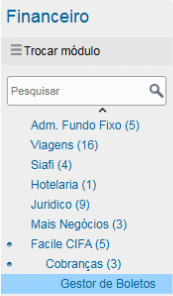
Figura 1: Gestor de Boletos
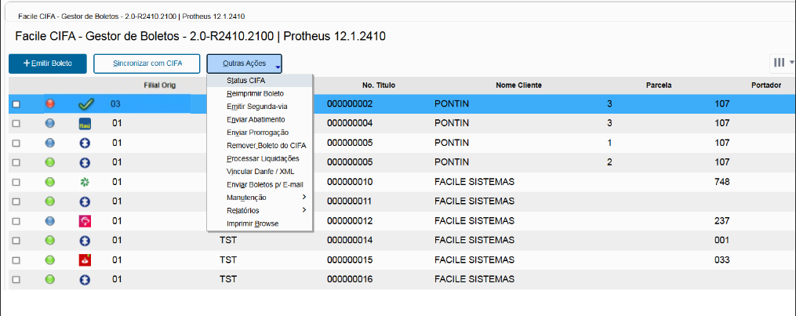
Figura 2: Tela Outras Ações
Principais funções
- Emitir Boleto
- Sincronizar com CIFA
- Status CIFA
- Reimprimir Boleto
- Emitir Segunda Via
- Enviar Abatimento
- Enviar Prorrogação
- Remover Boleto da CIFA
- Processar Liquidações
- Vincular DANFE / XML
- Enviar Boletos p/ e-mail
- Manutenção
- Relatórios
- Imprimir Browse
Emitir Boleto
A opção +Emitir Boleto permite gerar um ou mais boletos no banco através da CIFA.
Essa função deve ser utilizada quando a emissão automática não estiver ativa.
Seleção dos títulos
Para emissão, selecione títulos que apresentem a legenda verde ou azul e estejam identificados com a logo azul do quebra-cabeça da Facile.
Atenção: também é possível encontrar títulos com uma bolinha escura. Esses títulos são de Borderô e podem estar em CNAB. Tenha cuidado antes de realizar a operação.
Sincronizar com CIFA
A função Sincronizar com CIFA realiza a sincronização entre o ERP Protheus e a instituição bancária através da CIFA.
É possível sincronizar um ou mais títulos.
Títulos que tiveram alteração de vencimento ou valor podem exigir sincronização manual.
A sincronização também pode ser configurada para execução automática via job, conforme a configuração da empresa.
Outras ações
Status CIFA
Consulta no banco o status do boleto.
Reimprimir Boleto
Reimprime o mesmo boleto que foi gerado anteriormente.
Emitir Segunda Via
Atualiza o boleto mais recente no banco, incluindo informações como juros.
Enviar Abatimento
Sincroniza abatimentos com o banco.
Enviar Prorrogação
Sincroniza prorrogações.
Remover Boleto da CIFA
Realiza a remoção/baixa do boleto no banco conforme o processo da CIFA.
Processar Liquidações
Processa liquidações (baixas) de uma data específica.
Após o processamento, consulte o relatório Gestão de Títulos.
Vincular DANFE / XML
Utilizado quando a empresa utiliza o CIFA Web (Boleto Facile).
Enviar Boletos p/ e-mail
Envia o boleto para o endereço de e-mail cadastrado no cadastro do cliente.
Manutenção
Utilizada para extrair logs e dados técnicos para o suporte CIFA.
Relatórios
Disponibiliza o relatório Gestão de Títulos.
Imprimir Browse
Imprime os registros que estão filtrados na tela do Browser.
Cobranças PIX
O Gestor de Cobranças PIX permite gerar novas cobranças e processar retornos bancários.
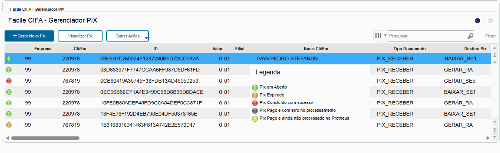
Figura 3: Gestor Pix
Gerar Novo PIX
- Acesse o Gestor de Cobranças PIX.
- Clique em +Gerar Novo Pix.
- Selecione o banco que será utilizado.
- Siga o wizard apresentado pelo sistema.
- Ao final do processo, será apresentado o QR Code PIX.
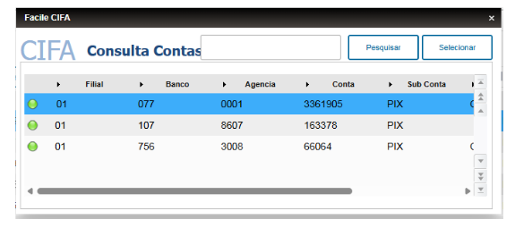
Figura 4: Selecionar Banco
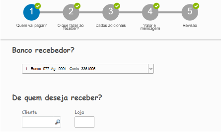
Figura 5: Seguir Wizard
Figura 6: Qr Code Pix
O QR Code apresentado já estará válido para pagamento.
Também é possível:
- Copiar e colar a linha digitável;
- Imprimir o PDF do QR Code;
- Enviar o QR Code ao cliente pelo WhatsApp Web.
Processar Retorno PIX
A função Processar Retorno PIX realiza a sincronização com o banco para verificar se os PIX foram pagos.
Esse processo também pode ser executado automaticamente via job, conforme a configuração da empresa.

Figura 7: Processar Retorno Pix
Módulo de Pagamentos
O módulo de pagamentos possui recursos de integração com fornecedores, DDA e pagamentos.
Entre as funcionalidades apresentadas estão:
- Conciliação automática com títulos de fornecedores;
- Busca de DDA diretamente na instituição bancária;
- Tela no ERP para conciliação manual.
Regra de conciliação automática
A regra apresentada para conciliação automática é:
Raiz do CNPJ + Valor + Vencimento
A busca de DDA pode ocorrer automaticamente quando o job estiver configurado ou ser executada manualmente.
Gestor de DDA
O Gestor de DDA permite consultar e conciliar registros de DDA com os títulos do Contas a Pagar.
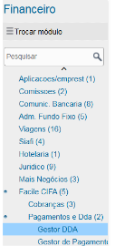
Figura 8: Gestor DDA
Busca de DDA diretamente na instituição bancária: Quando Configurado o Job Automático. Neste caso, os que estão em vermelho, já foram conciliados automaticamente. A qualquer momento pode ser executado manualmente pelo botão Conciliar Automático
Conciliação automática
Quando o DDA é conciliado automaticamente, o sistema apresenta a indicação correspondente.
A qualquer momento, pode ser executada a opção:
Conciliar Automático

Figura 9: Gestor DDA conciliado
Conciliação manual
Para registros que não foram conciliados automaticamente, mas cuja correspondência esteja correta:
- Marque manualmente os registros.
- Clique em Conciliar Selecionados.
- Confirme a operação.
Após a conciliação, os boletos serão vinculados aos títulos do Protheus.
Buscar DDA
Também é possível realizar uma busca específica de DDA para determinado fornecedor.
Caso não apareça nenhum DDA, existem duas possibilidades apresentadas no material:
- Não existe DDA para a data selecionada; ou
- É necessário realizar uma nova busca na CIFA.
Nesse segundo caso, utilize:
Buscar DDA na CIFA
Conciliar DDA com título
Quando existir um DDA no período selecionado:
- Localize o DDA na tela.
- Marque o registro correspondente.
- Localize o título aberto no Contas a Pagar referente ao fornecedor.
- Marque o título.
- Clique em Conciliar Selecionados.
Gestor de Pagamentos
O Gestor de Pagamentos permite selecionar títulos e preparar ordens de pagamento.
Selecionar títulos
Ao acessar o gestor, será apresentado um filtro para definir quais títulos serão pagos.
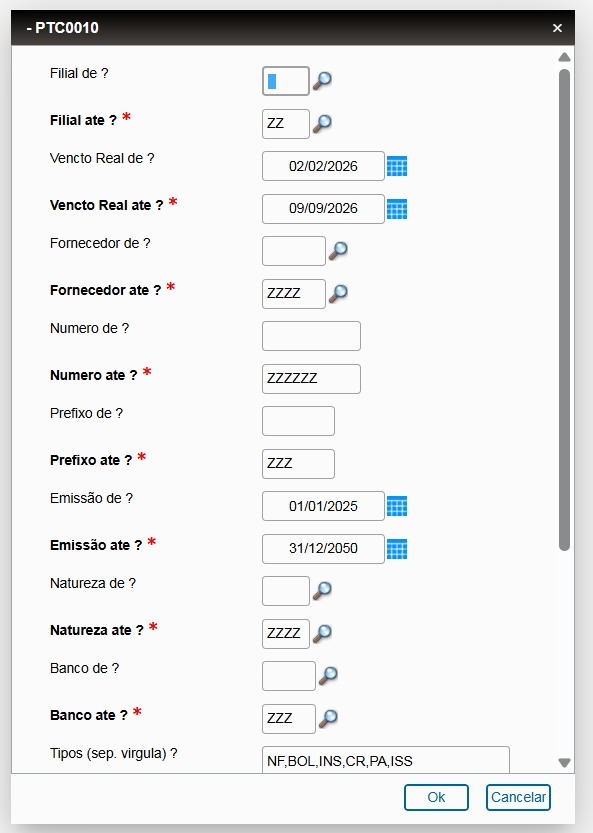
Figura 10: Filtro de Titulo
Depois de aplicar o filtro, os títulos correspondentes serão apresentados.
Selecionar a conta bancária
Após definir os títulos, deverá ser escolhida a conta banco que será utilizada para o pagamento.
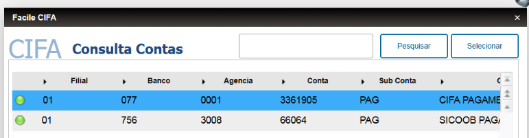
Figura 11: Selecionar Conta
Legendas
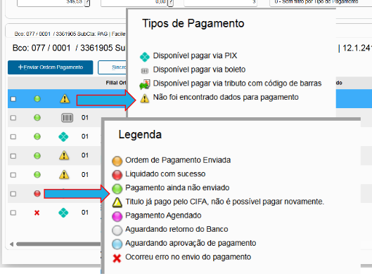
Tela de Legendas
Operações disponíveis
O operador poderá:
- Alterar dados de pagamentos;
- Alterar datas de pagamento;
- Confirmar Ordem de Pagamento;
- Checar a amarração de DDA.
Alterar dados do pagamento
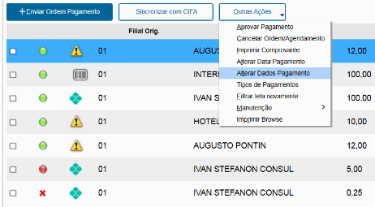
Figura 12: Alterar Dados de Pagamento
Caso o título tenha DDA, a linha digitável e o código de barras serão preenchidos automaticamente.
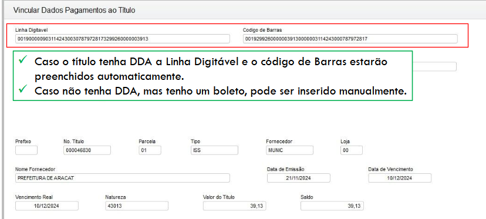
Figura 13: Titulo DDA
Caso não exista DDA, mas exista um boleto, os dados poderão ser inseridos manualmente.
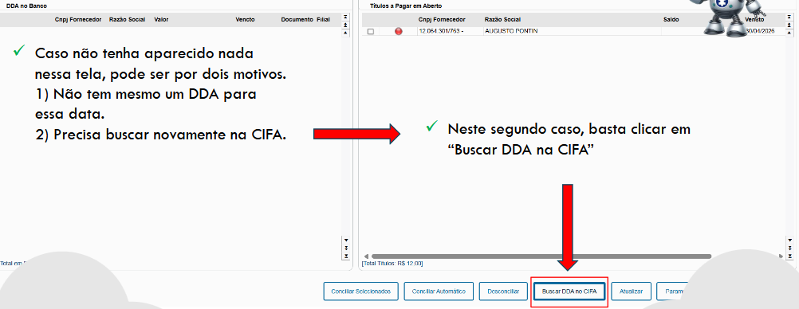
Figura 14: Busca DDA Cifa
Também é possível procurar DDA específico para o fornecedor através da opção:
Buscar nos DDA's
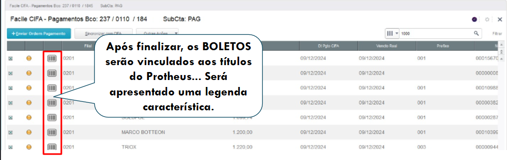
Figura 15: Boleto Finalizado
Transferências PIX
A CIFA permite realizar pagamentos via PIX diretamente pelo ERP.
Entre os recursos apresentados estão:
- Consulta e liquidação dos títulos no ERP;
- Pagamento via PIX;
- Autorização do pagamento diretamente pelo ERP.
Chaves PIX aceitas
O sistema aceita:
- Telefone;
- CPF/CNPJ;
- E-mail;
- Agência/Conta;
- Chave aleatória;
- Copia e Cola.
Informar o tipo de chave
Quando o pagamento for realizado por chave PIX:
- Acesse os dados de pagamento.
- Informe o campo Tipo de Chave PIX.
- Selecione o tipo correspondente:
- Telefone;
- E-mail;
- CPF/CNPJ;
- Aleatória;
- Agência/Conta;
- Copia e Cola.
Depois, defina a forma de pagamento padrão do fornecedor.
Os títulos com pagamento via PIX serão identificados por um ícone específico.
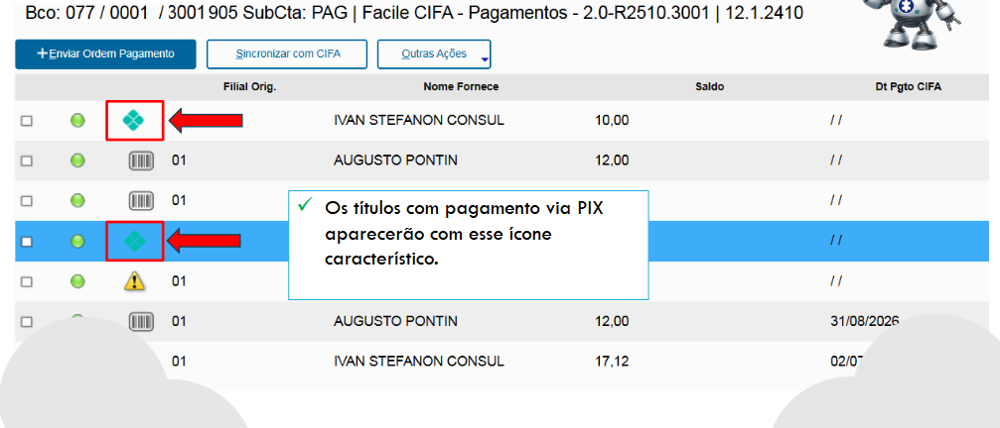
Figura 16: Titulo Pix
Títulos sem forma de pagamento previamente definida também apresentarão uma identificação própria e, ao serem acessados, solicitarão os dados necessários.
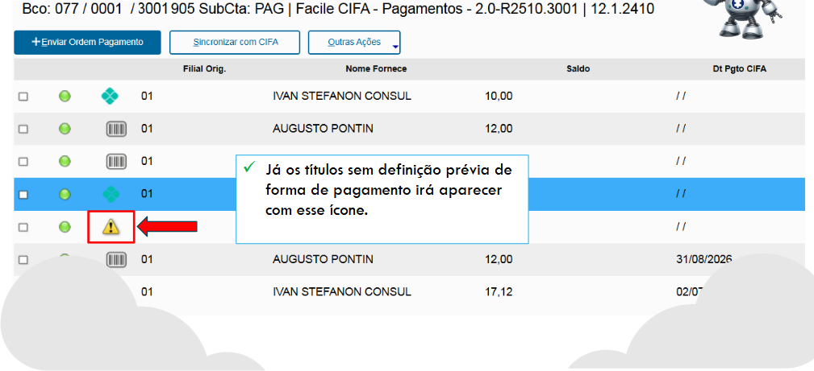
Figura 17: Sem Forma de Pagamento
Impostos
O módulo permite trabalhar com pagamentos de impostos e guias que possuem código de barras.
São apresentados no material:
- GPS — Guia da Previdência Social
- Guias de recolhimento com código de barras;
- GRU com código de barras;
- DARF Preto com código de barras.
Também é possível realizar a autorização do pagamento diretamente pelo ERP.
Os impostos com código de barras serão identificados por um ícone característico.
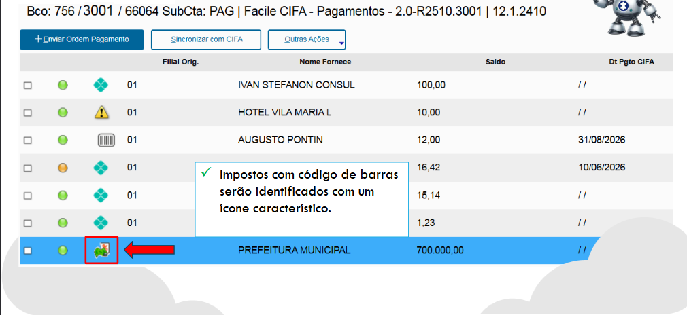
Figura 18: Impostos Codigo de Barra
Aprovação de Pagamentos
O processo de aprovação envolve a seleção dos títulos, envio da ordem de pagamento, aprovação pelo usuário responsável e sincronização com a CIFA.
1. Selecione os títulos
Selecione os títulos que serão pagos.
2. Verifique a data de pagamento
Caso o pagamento seja para o dia atual, é necessário alterar a data de pagamento conforme o procedimento do sistema.
3. Envie a Ordem de Pagamento
Após conferir os dados, utilize:
Enviar Ordem de Pagamento
4. Aguarde a aprovação
Se o título ficar com a legenda azul, será necessário que o aprovador finalize o processo.
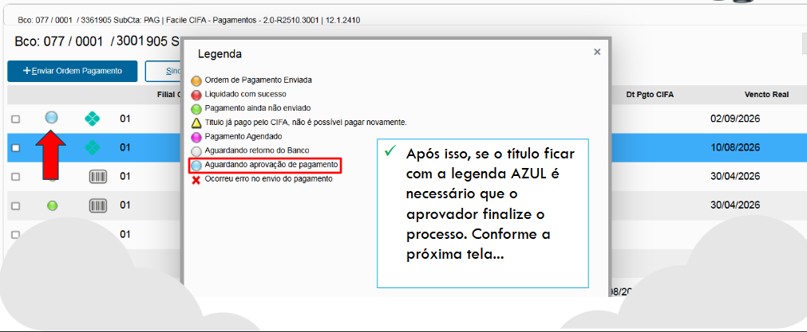
Figura 19: Legenda Azul
O usuário previamente cadastrado deverá realizar a aprovação para liberar o pagamento junto ao banco.
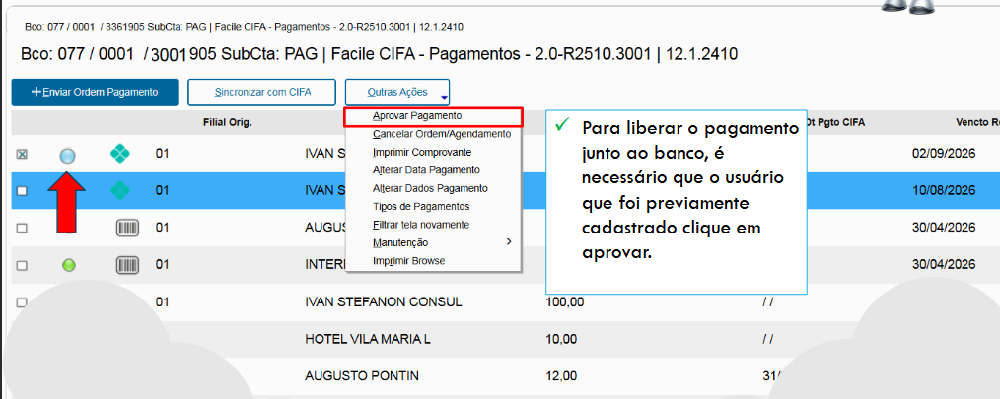
Figura 20: Aprovar Pagamento
5. Após a aprovação
Depois da transmissão da aprovação, os títulos aprovados ficarão com a legenda laranja, indicando:
Ordem de Pagamento enviada. Aguardando Liquidação.
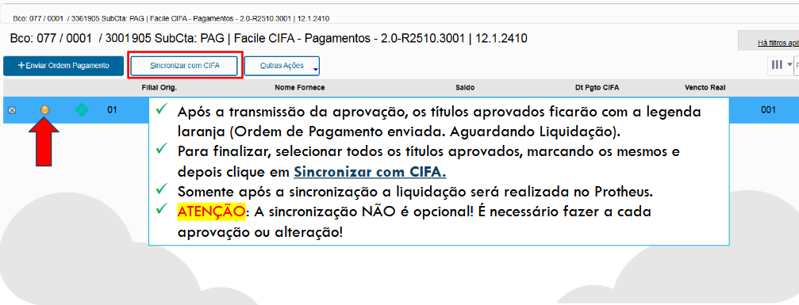
Figura 21: Aprovamento concluído
6. Sincronize com a CIFA
Para finalizar:
- Selecione todos os títulos aprovados.
- Clique em Sincronizar com CIFA.
- Aguarde o término da sincronização.
Os títulos que tiverem o símbolo de seta verde, tiveram alteração de vencimento ou valor, devem ser sincronizados manualmente. Também existe a possibilidade dessa sincronia ser feita de forma automática via job.
ATENÇÃO: a sincronização não é opcional. Ela deve ser realizada a cada aprovação ou alteração.
Somente após a sincronização a liquidação será realizada no Protheus.
7. Consultar títulos liquidados
Após a sincronização, os títulos finalizados ficarão com a legenda vermelha.
Para consultar:
- Acesse Filtrar Status CIFA.
- Selecione a opção 4 — Liquidado.
- Marque o título desejado.
- Clique em Imprimir Comprovante.

Figura 22: Pós-Sincronização
8. Título reaberto após pagamento
Caso um título tenha sido reaberto ou sua baixa tenha sido cancelada após o pagamento, a legenda de status será alterada.
Mesmo nesse caso, o comprovante poderá continuar sendo impresso.
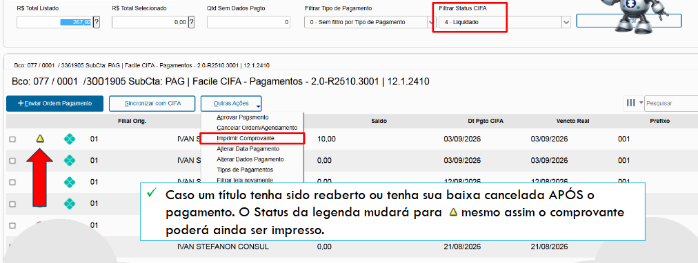
Figura 23: Titulo Reaberto
9. Consultar LOG
Caso seja necessário acompanhar o LOG de um título ou enviar informações para o suporte:
Outras Ações → Manutenção

Figura 24: Manutenção
Gestor de Saldos e Extratos
O Gestor de Saldos e Extratos realiza a integração de informações bancárias através de API.
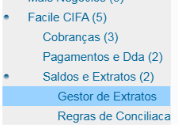
Figura 25: Gestor de Extratos
Importação do extrato
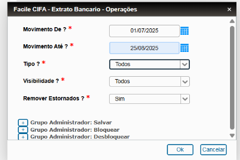
Figura 26: Filtro Extrato
No menu inicial, selecione o período que será importado do banco.
Importante: não é possível importar o extrato do dia corrente. A importação deve considerar sempre pelo menos um dia anterior.
Após a importação, o sistema apresenta:
- Extrato importado do banco via API;
- Movimento bancário no ERP Protheus correspondente ao mesmo período.
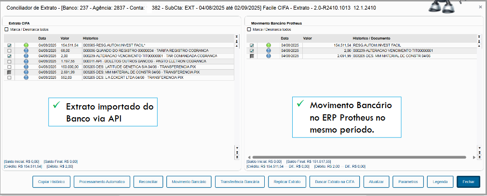
Figura 27: Tela Info Extrato
Situações dos movimentos
O Gestor de Extratos apresenta movimentos em diferentes situações:
Movimentos conciliados automaticamente
São movimentos identificados e conciliados automaticamente pelo sistema.
Movimentos reconciliados manualmente
São movimentos que passaram pelo processo de reconciliação manual.
Movimentos existentes somente no banco
São movimentos registrados no banco para os quais não existe um movimento correspondente no Protheus.
Nesse caso, é possível:
- Criar um movimento bancário único; ou
- Utilizar Replica Extrato para replicar um ou mais movimentos.
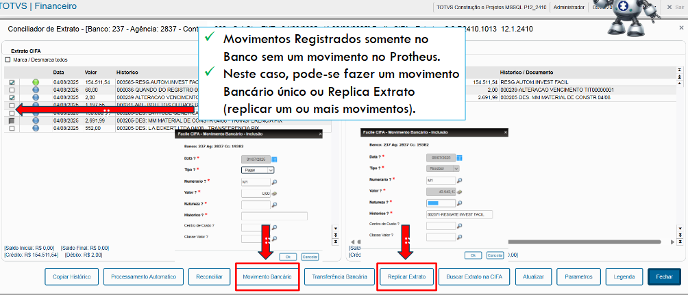
Figura 28: Movimento Bancário
Regras de Conciliação
A CIFA permite criar regras para movimentos pré-definidos.
Essas regras podem fazer com que determinados movimentos sejam replicados automaticamente para o Protheus quando ocorrerem no banco.
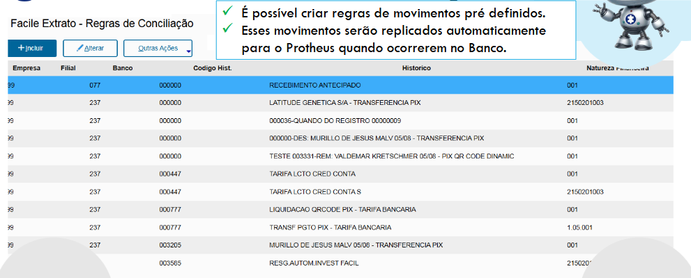
Figura 29: Regras de Movimentos
Um exemplo apresentado é a criação de um movimento automático para tarifa.
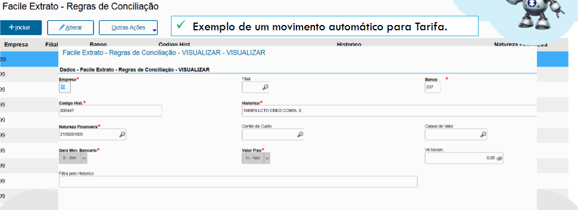
Figura 30: Criação Movimento automático
Suporte
Caso tenha dificuldades para localizar um menu, executar uma operação ou interpretar uma situação apresentada pelo sistema, consulte o responsável pelo suporte de TI/Protheus da sua empresa.
Para informações técnicas relacionadas à CIFA, utilize a função Manutenção quando necessário para extrair LOGs e dados técnicos destinados ao suporte.
Confidencialidade: o material de referência informa que as informações sobre produtos e serviços são de propriedade imaterial da Facile Sistemas e que sua utilização é destinada ao uso interno do cliente, observadas as condições de autorização previstas no próprio documento.